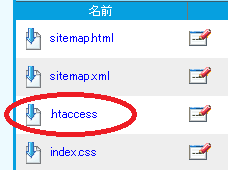
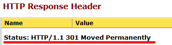
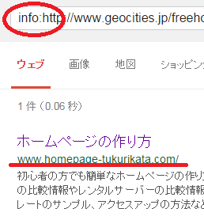
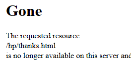

リダイレクト設定によるURLの転送方法
ホームページのURLを変更した際には、リダイレクト設定をして、古いページから新しいページへアクセスを転送させましょう。
【ケース１：】サイトを引っ越すとき。
URL転送の一番多いパターンはサイトを引越す場合です。無料サービスで運営していたものの、運営元がサービスを終了してしまった場合などは、独自ドメインを取得してレンタルサーバーへ引越すことが多いです。
例えば、「サイトを引っ越しました。新しいアドレスはこちらです。→ ほにゃらら.com」のようなパターンになりますが、このように元サイトに移転先のURLを貼り付けておくだけというのはＮＧです。
人間がみれば「あぁ、引っ越したんだな。」とわかりますが、検索エンジン側では同一のサイトとはみなさず、それぞれを別々のサイトとみなしてしまいます。
これでは長年運営してきた運営歴や参照されているリンクが引き継がれず、一からのやり直しになりますので、検索順位が低下してしまい、アクセス数が激減してしまう傾向にあります。
新旧どちらのサイトでも検索結果でヒットしますので、お得なように感じられるかもしれませんが、新サイトひとつに統一した方が検索エンジンではヒットしやすくなります。
そのため、旧サイトの情報が新サイトにも引き継がれるよう、301リダイレクト設定をしておきましょう。
301リダイレクトは永久的な転送、302リダイレクトは一時的な転送という違いがありますが、302はサイトのメンテナンス時などに使うケースはあるものの、ほとんど使うことはないので、301リダイレクトの設定方法だけを覚えておくとよいでしょう。
【ケース２：】自サイト内でURLを変更するとき。
ページ数が多くなってきた際には、新しくフォルダ分けをしてファイルを整理することがあります。当サイトも最初はひとつのフォルダ内にすべてのファイルを入れてましたが、現在ではカテゴリごとにそれぞれフォルダを作成してまとめています。
このような場合でも、URLを変更する際にはリダイレクト設定をしておく必要があります。ドメインの年齢とともにページの年齢もありますので、リダイレクト設定をしておかないと0歳からやりなおしになります。
加えて、他サイトから参照されている場合もリンク切れになってしまいますので、301リダイレクト設定をして転送させるようにしましょう。
301リダイレクトの設定方法
この301リダイレクトの設定をするには、「.htaccessを使用する方法」と「metaタグを使う方法」があります。
.htaccessを使う方法
まず、リダイレクト元のサーバーのルートディレクトリに「.htaccess」ファイルを作成します。このファイル名は特殊で、拡張子なし、先頭にドット（点）が必要です。たいていのレンタルサーバーではファイルマネージャーでそのまま作れます。
当サイトの場合はこんな感じで作ってます。

このファイルに以下のように記述して最後に改行を入れます。
最後に２、３回改行して空白を入れておけば十分です。
例：サイトを www.example.com へ丸ごと引っ越しするとき。
Redirect permanent / http://www.example.com/
この意味は「リダイレクトしてください。永久に。すべてのファイル（ / ）を。http://www.example.com/ へ。」になります。
けれども、この場合、文字どおりすべてのファイルが http://www.example.com/ のトップページへリダイレクトされるわけではなく、階層を保持しつつリダイレクトされます。
例えば、/home/about.html のファイルは、この階層を保持したまま、http://www.example.com/home/about.html へと転送されます。
そのため、特定のページのみを違う場所へ転送させたい場合には、一番最初に書いておくとよいでしょう。
例えば、apple.html のページのみ、新サイトの ringo.html へリダイレクトしたい場合、この行を先に書いておきます。
Redirect permanent /apple.html http://www.example.com/ringo.html
Redirect permanent / http://www.example.com/
CSSの場合とは違い、最初に書いてある方が適用されますのでご注意ください。
metaタグを使う方法
無料レンタルサービスなどで上記の「.htaccess」が使えない場合には、転送させたいページのヘッドタグ内のmetaタグに以下のように記述します。
サーバーからの反応は「301」ではなく「200 OK」で返ってきますが、「0秒」で指定している場合、検索エンジン側での扱いは301リダイレクトになります。
けれども、このメタタグの場合、反映されるまでに時間がかかったり、あるいは無視されるケースもありますので、URL正規化のLINK要素もheadタグ内に設定しておくことをおすすめします。
この正規化のURLは相対リンクではなく、絶対リンクで設定します。
メタタグリダイレクトと正規化の「rel="canonical"」タグを併用することの是非はありますが、当サイトではこれで対処しております。
正常にリダイレクトされるかをブラウザで確認
気を付けたいのは、リダイレクト元と先が同一ページの場合、永遠にリダイレクトされ続けて無限ループになってしまうことです。実際にブラウザで元ページにアクセスしてみて、正常に転送されているかを必ず確認するようにしましょう。
HTTPレスポンスの確認
サーバーがブラウザに正常に301リダイレクトを返しているかを確認します。
Web Snifferなどで確認できます。

アクセスログでの確認
設定したあと膨大な404エラーが発生するようになった際には、リダイレクト設定がおかしい可能性があります。エラーログを確認してみて、どのページの設定がおかしいのかを確認してみるようにしましょう。
検索エンジン側で正常にリダイレクトが反映されているかの確認
上記で正常にリダイレクト設定が完了したあと、検索エンジンでも正常に反映されているかを確認しましょう。
「info:ドメイン名」でサイト情報の確認
数週間程度あとに、「info:ドメイン名」コマンドを使って確認してみることをおすすめします。info:コマンドで旧サイトのサイト情報を検索し、新しいサイトのドメイン名が表示されていればＯＫです。
例えば、当サイトはヤフージオシティーズから引っ越してきましたが、旧URLのサイト情報を確認してみると当ドメインの情報が表示されています。

「site:ドメイン名」での確認
フォルダ単位など複数のファイルをリダイレクト設定した場合には「site:ドメイン名」で検索し、正しいURLへ転送されているかどうかを確認しましょう。
当サイトの場合、以前に100ページ以上をリダイレクト設定しましたが、１か月が経過してもインデックスが反映されていないページなどがありました。
特に、メタタグの0秒リダイレクトで対応したケースでは設定が反映されるまで時間がかかるので、できるだけサーバーの.htaccessを利用するようにしましょう。
ページを明示的に削除
転送設定をしていると、これはもういらないなというページも出てくるかと思います。その場合、ファイルを削除して放置しておけば、いずれはインデックスから削除されることにはなりますが、この場合はエラーページの「404 not found」が表示されます。
この状態ではエラーでたまたま１時的にページが表示されないのか、それとも削除されたのかは検索エンジン側では判断できませんので、しばらくの間はインデックスが保持されることになります。なので、明示的に削除したという意味の「410 Gone」を設定されることをおすすめします。
例えば、example.htmlのファイルを削除する際は、転送先を記述せず、単に以下のように記述します。
設定したファイルにアクセスするとこのように表示されます。

間違って設定してしまうと必要なページも全て削除してしまう可能性がありますので、慎重に使用するようにしましょう。
元ページの保持
ドメインを変更した際、リダイレクト設定をして引っ越しが済んだ時点で元のドメインを捨ててしまうケースが多いです。捨ててしまうとリンク切れが多発しますし、リダイレクト設定が無効になりますので検索順位などへも悪影響が出ます。
ドメインを捨ててしまってから気づいても遅く、他の人が取得してしまった場合は何もできなくなってしまいます。
たった数千円程度の維持費用をけちったばかりに、代理業者に依頼して譲渡交渉をするとなると数十万円以上のコストがかかるケースもありますし、多額の費用をかけても譲渡に応じてくれるかは相手次第になりますのでご注意ください。
どうしても保持できない場合
無料サービスの終了などで元ページを確保できない場合、閉鎖により元ページが消失してしまう前に新サイトをインデックスさせておくようにしましょう。両方がインデックスされ、元サイトから新サイトへの一方的なリンクが貼られていれば、新サイトがメインサイトであることを暗に通知することができます。
この場合でも、元サイトが消失することで被リンクなどは失ってしまうことにはなりますが、元サイトから一方的にリンクすることにより、まったく同じサイトを公開することによる検索エンジンへの悪影響を回避することができます。無料サービスが運営を終了する場合、そのぐらいしか対処する方法はありません。
もし可能であれば、新旧のサイトをSearch Consoleに登録して、アドレス変更の設定をしておくことをおすすめします。